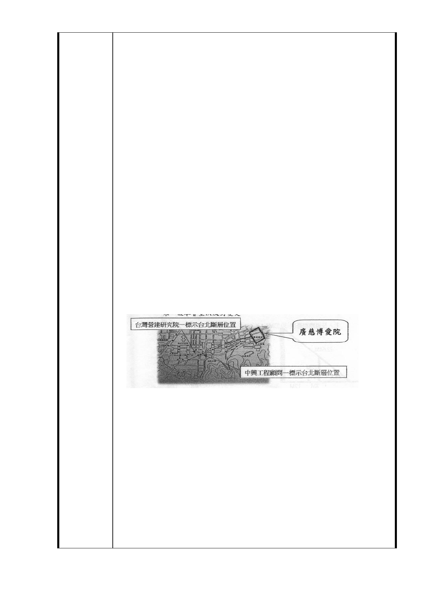

因 BOT 委託開發延宕，周邊公共設施服務水準沒有一絲一
毫改變，台北市政府對廣慈周邊的評估竟 180 度大改變，由
民國 95 年的「周邊公共設施服務水準不佳」，變成現況為「
道路服務水準、停車需求、公共設施可負荷」，以此理由將
社福用地容積率從 210％調高為 400％，居民大家都傻眼。（
註一）
3.在周邊公共設施服務水準不勝負荷的情況下，驟然將社福用
地容積率從 210％暴增為 400 %，增加的人潮、車輛影響周
邊交通環境，不但無法提高本區的生活品質，反而會陷害廣
慈周邊居民掉入痛苦的深淵。
4.台北市政府對廣慈周邊的評估，是什麼時候評估的？採用的
是什麼評估方法？評估的報告應該公告出來，這種 180 度大
改變、自我矛盾的評估到底憑藉的是什麼？容積率為 210％
調高為 400%！差很大！台北市政府漠視都市計畫之願景，
嚴重破壞都市均衡發展與居民生活環境，罔顧居民權益，這
簡直是埋下一顆強迫居民抗爭的種子，這樣顢頇的政策，市
民無法接受，一定會抗爭到底。
5.依 95 年公告核定的主要計畫內，已敘明〝臺北斷層〞橫經
廣慈博愛園區基地，因屬敏感地質（如斷層破碎帶、斷層擾
動帶），情況特殊並有安全顧慮（如附圖一），本次修正變更
提高為『原機關用地容積率為 400％』時，有將敏感地質納
入評估嗎？評估的報告都沒公告出來，故本會堅決反對變更
。
二、建請在社會福利設施用地北側（鄰林口街八十巷）規劃綠帶
20 公尺（在容積率為 210％的前提下），寬度必須足夠維持
法律保障的日照權。
理由：
1 .根據「建築技術規則建築設計施工篇」第廿三條第二項規定
：建築物在冬至日所造成的日照陰影，應使鄰近基地有一小
時以上的有效日照，即是所謂的「日照權」。（如附件一第一
頁）
2.根據「建集技術規則建築設計施工篇」第四十條規定：住宅
至少應有一居室之窗可直接獲得日照。
3.2006/3/20 TVBS-N 報導 台北市建管處主秘羅榮華：「房子建
築超過 21 公尺或 7 層樓，必須檢討北向日照，在冬至日不
能妨害到鄰地。」林口街八十巷公寓住宅就位在廣慈園區的
- 20 -